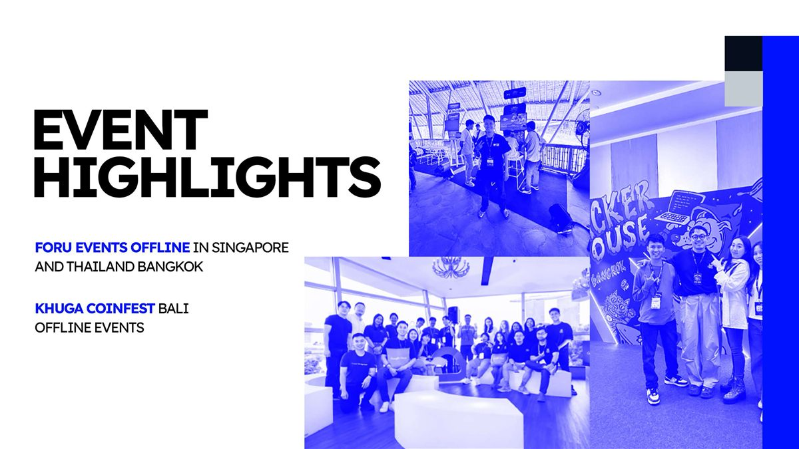
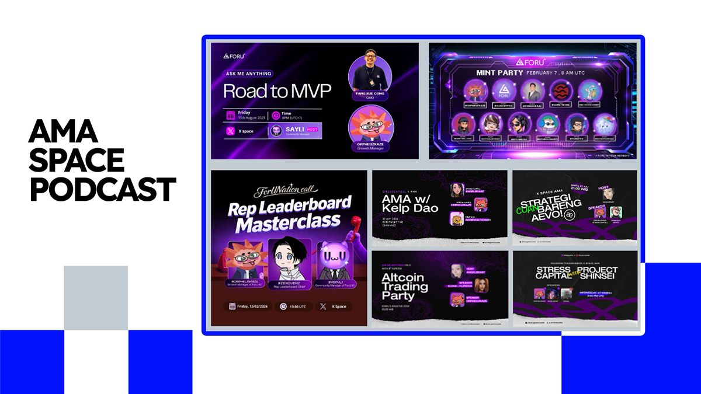

Portfolio 2026 · Open to freelance
ORPHEUZKAZE
I support Web3 projects across growth, community, moderation, and partnerships — currently through both ongoing freelance engagements and selected project roles.
Profile
Hello, I'm Orpheuzkaze.
I am a Web3 growth and community specialist with a background in Information Technology. I work closely with teams to strengthen visibility, build engaged communities, and improve market traction.
I bring three years of experience as a Marketing Partnership Manager and two years as a Growth Manager in Web3, with a practical and results-oriented approach to every engagement.
My strengths include community building, social media strategy, and creative growth initiatives. I maintain high standards across marketing, community engagement, and content creation.
Alongside the featured roles below, I am also working on a freelance basis with clients across growth, community, and partnership needs. Those engagements are ongoing and are not listed here by preference.
Experience
6 years
Availability
Freelance & project-based
Region
Indonesia
CV
Available on request
Current Work
Also active on a freelance basis
In addition to the featured roles on this site, I am currently supporting clients through freelance work in growth, community, and partnerships. These engagements are ongoing, and client details remain private.
Featured Experience
I partner with projects that share a clear vision.
A selection of past and present roles spanning growth, partnerships, moderation, and community operations across the Web3 space. This is not a complete list of my current work.


2024 — Now
LILSTARS | Growth and Marketing (Hybrid)
- Planned and facilitated AMAs, cross-collaborations, and partnerships to strengthen community participation and brand visibility.
- Grew LILSTARS followers from 0 to 140K.
- Grew the LILSTARS Discord community from 0 to 180K members.
- Managed 200+ pre-mint and post-mint collaborations, ensuring alignment with broader business objectives.
- Supported a mint campaign that raised 100K USD.
2024 — Now
FORUAI | Growth Manager (Hybrid)
- Established partnerships with local communities across Indonesia.
- Led community engagement across social media and digital platforms, facilitating discussions and responding to inquiries in a timely manner.
- Coordinated AMAs, cross-collaborations, and partnerships to strengthen community participation and brand presence.
- Supported go-to-market efforts focused on user conversion and acquisition.
- Grew FORU followers from 50K to 250K and Discord membership from 0 to 180K.
- Developed strategies to increase user inflow and improve campaign performance.
2024 — 2025
Apriori Labs | Community Manager (Remote)
- Built and maintained relationships with key partners, including companies, influencers, and organizations, to deliver successful collaborations.
- Managed 200+ pre-TGE and post-TGE partnerships, ensuring alignment with overall business goals.
- Represented the project at offline events, including MONAD in Singapore.
2023 — 2024
Khuga Labs | Partnership (Remote)
- Built and maintained relationships with key partners, including companies, influencers, and organizations, to deliver successful collaborations.
- Grew Khuga followers from 7K to 80K and Discord membership from 1K to 20K.
- Supported fundraising and trading efforts that generated over $500,000 and 400 ETH in OpenSea volume.
- Managed 200+ pre-mint and post-mint collaborations, ensuring alignment with broader business objectives.
- Worked closely with internal teams to ensure partnership initiatives supported strategic goals.
- Represented the project at offline events, including Coinfest, MONAD, and W3GG.
2021 — Present
Stress Capitals | Community Manager (Remote)
- Established partnerships with local exchanges, including AJAIB, INDODAX, and FLIPSTER, to support growth and visibility.
- Grew Stress Capitals followers from under 5K to 25K and Discord membership from 1K to 28K.
- Led community engagement across social media and digital platforms, facilitating discussions and responding to inquiries promptly.
- Coordinated AMAs, cross-collaborations, and partnerships to strengthen community participation and brand presence.
2023
Kometh | Partnership (Remote)
- Nurtured partnerships with influencers and organizations, contributing to $250,000 and 100 ETH in OpenSea volume.
- Grew Kometh followers from under 10K to 95K and Discord membership from 1K to 110K.
- Managed 250+ pre- and post-mint collaborations, working closely with multiple departments to align partnerships with business strategy.
2022 — 2023
Imaginary Ones | Moderator (Remote)
- Managed community moderation, reviewed reports, and resolved issues thoughtfully and efficiently.
- Engaged actively in community discussions, fostering a welcoming environment and addressing member inquiries.
- Coordinated with sales and product development teams to ensure moderation supported partnership and brand objectives.
2022 — 2023
Fractal | Moderator (Remote)
- Moderated a growing community with care, ensuring content remained aligned with brand values.
- Engaged with members through chat discussions, fostering a positive and supportive community environment.
- Maintained consistent, thoughtful participation across daily community conversations.
Brand Partners
Brand Partners
Trusted ecosystems and platforms I have collaborated with.


Skills
Tools I Use
Discord, X, Telegram, Notion, Google Workspace
My primary toolkit for running community operations, coordinating campaigns, managing communication, and keeping cross-team execution organized.
Community & KOL Growth
Experienced in building engaged communities and driving growth through KOL partnerships, influencer outreach, ambassador programs, and coordinated activation campaigns.
English & Bahasa Indonesia
Professional proficiency in both languages, supporting client communication, community management, partnerships, and campaign execution across local and international audiences.
X, Discord, Telegram
Platforms I use daily for audience growth, moderation, engagement, announcements, Spaces, and ongoing community management.
Notion, Google Sheets, Google Docs
Tools for tracking collaborations, planning campaigns, preparing reports, maintaining documentation, and supporting internal coordination.
Gmail, Calendar, Meet, Spreadsheet Pipelines
How I manage outreach, partner follow-up, scheduling, deal flow, and the day-to-day execution of collaborations.
Canva, Google Drive, ChatGPT
Resources I rely on for content drafting, lightweight design support, campaign assets, and organized content workflows.
Social Metrics, Community Insights, Manual Reporting
Approaches I use to review campaign traction, audience growth, event performance, and activation outcomes.
Events and Media
Events & Media
In-person events, AMAs, Spaces, and podcast appearances across multiple projects.
Represented FORU at in-person events in Singapore and Bangkok, Thailand.
Supported Khuga at Coinfest Bali through on-the-ground event coordination.
I have hosted and supported AMAs, X Spaces, and podcast-style sessions across multiple Web3 projects — covering launches, roadmap updates, community Q&A, and ongoing engagement programming.
Recent formats include Ask Me Anything sessions, Mint Parties, ForUNation calls, Rep Leaderboard sessions, Masterclasses, and recurring Space programming for different ecosystems.


Key Results
Key Results
Consistent execution across digital projects.
Years of work across growth, community, moderation, partnerships, launches, and go-to-market execution have given me a grounded foundation for building digital campaigns that deliver.
My focus remains on audience growth, conversion, collaboration, fundraising support, and stronger ecosystem traction throughout each project cycle.
518K+
Total Followers Growth
Total follower growth supported across LILSTARS, FORUAI, Khuga Labs, Stress Capitals, and Kometh.
515K
Total Discord Growth
Total Discord member growth achieved across LILSTARS, FORUAI, Khuga Labs, Stress Capitals, and Kometh.
1.03M+
Total Social Reach Built
Combined social and community audience developed through documented follower and Discord growth.
850+
Total Collaborations
Partnerships and collaborations managed across LILSTARS, Apriori, Khuga Labs, and Kometh.
850K+
USD
Total Raised
Fundraising support contributed across LILSTARS, Khuga Labs, and Kometh initiatives.
500
ETH+
OpenSea Volume
Trading volume supported across Khuga Labs and Kometh campaign efforts.
Let's Stay in Touch
Contact
I would be glad to hear from you regarding freelance work, partnerships, growth strategy, community management, or collaboration opportunities. For inquiries, please reach out through Telegram, email, or X.